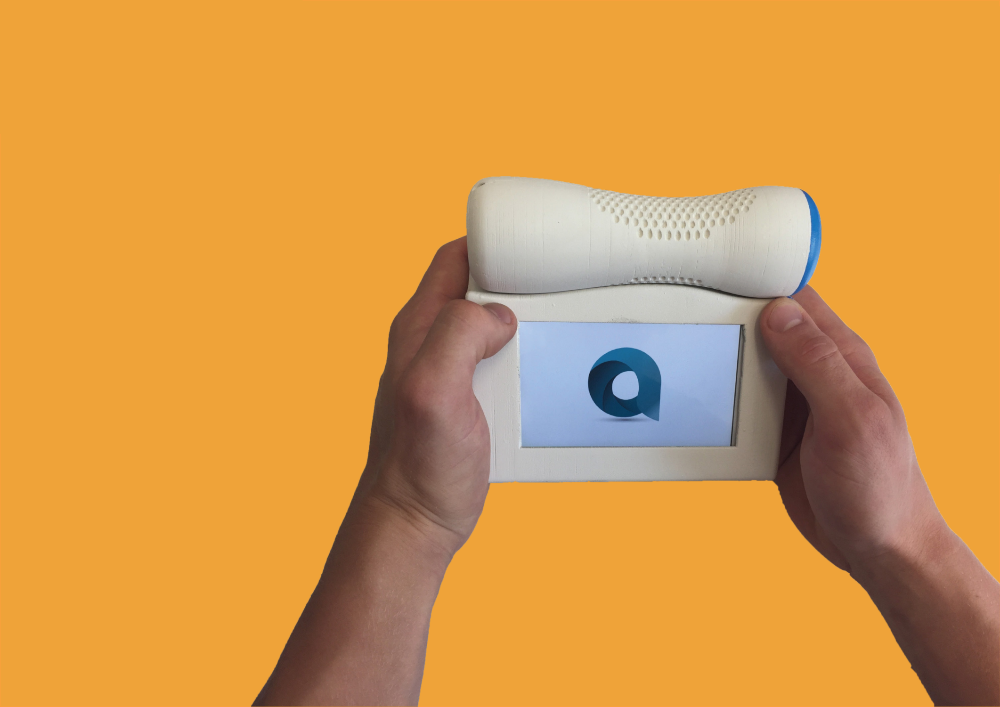

2017 - Group Project with Lidia Dynes-Martinez, Felix Crowther and Bea Lopez

Amun is a low cost spirometer (lung measuring device) that can measure tidal volume
and with the addition of a nitrogen washout module total lung capacity.
Amun was designed for use in urban India, which has the highest global rate of
lung disease due to high levels of pollution and population density.
Lookalike Prototype
The final design underwent much refinement and iteration from concept sketches, rapid prototyping
and testing with end users.
Initial concept sketches.
Bluefoam models used for user testing.
Design iterations: bluefoam models, low fidelity prototype, high fidelity prototype.
Final Design:
Overall product design.
Functional Prototype
The device had to measure air volume accurately.
Hot Wire Anemometry was used to measure the speed of airflow, from which volume could
be calculated. This method was used for its low cost and high performance.
Airflow sensor
Protototype setup
The sensor was first callibrated by passing known a known volume of air through the device
and calculating a scaling factor.
Signal Processing was an important step for producing useful data:
Low pass filter to smooth signal
Edge detection of breath to eliminate trailing edge of signal
Calculating volume by integrating the flow speed
Testing the device functionality.
The device produced results with an accuracy: ±0.03 Litres and precision: ±0.01 Litres
 about
about